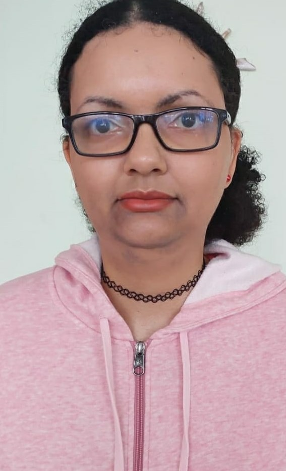

<!DOCTYPE html>
<html lang="pt-br">
<head>
    <meta charset="UTF-8">
    <meta name="viewport" content="width=device-width, initial-scale=1.0">
    <title>Curriculo</title>
<style>
    body{
        font-family: Arial, Helvetica, sans-serif;
    }

    a {
        color:rgb(4, 150, 2);
        text-decoration: none;
        font-weight: bold;
    }
    a:visited{
        color:rgb(0, 66, 13);
    }

    #aula:visited{ 
        color:green;
    }
    a:hover{ 
        color:rgb(20, 152, 0);
        text-decoration: underline;
    }
    a:active{ 
        color:rgb(69, 123, 70);
    
    }
</style>
</head>
<body style="background-color:#13B028;font-family: Arial, Helvetica, sans-serif; font-size:16px;">
</html>  
    
    <h1 style="background-color:#0C701A;color:#18D631;">Minha Apresentação</h1>

    <p style="color:rgb(2, 98, 21);font-size:1.2em;">Meu nome é Raissa Fernandes Gomes Batista, tenho 34 anos, 
    sou formada em Educação Fisica Bacharelado e Licenciatura.As minhas habilidades e competências são pontualidade, 
    trabalhar em equipe, organização,pensamento crítico,curiosidade,colaboração,
    dedicação,empatia,inglês básico,espanhol básico,informatica básico </p>

    <p style="color:rgb(2, 98, 21);font-size:1.2em;">Minhas experiências profissionais foram na academia Fitness Center do colégio Antônio Peixoto,
    como estagiária em outubro de 2009, trabelhei como professora na creche Paulo Michels de fevereiro de 2019 a maio de 2019,nas escolas Nossa 
    Senhora da Conceição em setembro de 2017,na escola de Educação Básica Rosa Torres de abril de 2018 a dezembro de 2018 e na escola de Educação Básica 
    América Dutra Machado em junho de 2019.</p>  

    <p style="color:rgb(2, 98, 21);font-size:1.2em;">Meus trabalhos voluntários foram na prefeitura de Florianópolis ministrando ginástica para idosos de 
    junho de 2018 a novembro de 2018 e ser catequista de março de 2018 até hoje. </p>
    
    <p style="color:rgb(2, 98, 21);font-size:1.2em;">Meus cursos foram Gestão e Empregabilidade da RECODE e 
    Além de Jogar, Eu faço Jogos!-CPDI de maio até outubro de 2023.</p>  

</p>
    <h1 style="background-color:#0C701A;color:#18D631;">Minhas Redes Sociais</h1>
    <p style="color:rgb(2, 98, 21);font-size:1.2em;">
    
    <a href="https://github.com/RaissaFernandes25/">Meu perfil no Github</a>

    <a href="https://instagram.com/raissafernandes9/">Meu perfil no instagram</a>

    <a href="https://linkedin.com/in/raissabatista/">Meu perfil no linkedin</a>

    <a href="https://facebook.com/raissabatista.56/">Meu perfil no facebook</a>
</p>

    <br>
    <a href="index.html">Voltar</a>
    
</body>
</html>